Project Home Security
Members: Lee Rong Jun (A0168631B) and Yeo Hwee Kiat (A0168506Y)
What’s
it about?Implementation
of a home security system that is capable of detecting motion within
a real space. The system will be activated when the home owner leaves
the vicinity, and when unauthorised human motion is detected within
the house, countermeasures will be activated. Examples of such
features can include audible alarms to alert neighbours about the
break-in, as well as automatic closing and locking of all entrances
of the house, including the windows.
What type of project?The project will be based on the Arduino platform where coding will be done to simulate motion detection as well as actions to be taken upon recognition of unauthorised movement. Coding will be done and tested using the Fritzing software to allow us do some circuitry planning and identify any errors within our registered code in terms of our represented outputs on the Arduino – Breadboard connections. Examples can include using a servo motor to simulate locking and unlocking of doors/windows, speaker to simulate the sounding of the alarm and/or RGB LED lights to display different colours for different actions. Furthermore, photocells will be used to simulate the detection of motion in this project.
How it works:The following items will play the respective role in achieving security in a home.
Photocell sensor: Used to detect motion using light intensity. If a human is to walk past the sensor, light intensity would be reduced and the sensor would be activated, and specific countermeasures will be taken accordingly.
Servo motor: Used as a mechanism to lock doors and windows in the house when the security system is activated AND unauthorised movement is detected.
Speaker: Used as an alarm to inform and warn neighbours about the intruder(s) within the house, it will only be activated when security system is activated AND unauthorised movement is detected.
Toggle switch: Used to turn the security system on/off.
The security system
will be deactivated at all times when the owner or his/her family is
at home. Whenever they leave the house, the toggle switch will be
used to turn the security system on. If no further motion is detected
when the security system is activated, the servo motor and the
speaker will remain deactivated. It is only during detection of
further movement will then the servo motor and speaker will be
activated. When the owner or any of his/her family returns home, they
can deactivate the security system by using the toggle switch.
Why do you want to do it?The implementation of a home security system will allow the home owners to have no worries about leaving their homes especially on extended periods. Audible alarms that activate upon detection of unauthorised movements would alert neighbours about the break-in and will thus allow them to take action against the intruders. In addition, ensuring that all doors are automatically locked will play an important role in preventing the criminals from escaping from the house when the system is activated.
Challenges
(Pre-Project)1.
As
neither my partner nor I have any experience in coding prior to
starting this module, we will expect many errors and troubleshooting
to be done when testing our code and circuit planning using the
Fritzing software.
2.
Setting
up the various components using the actual Arduino Uno would also
take up considerable amounts of time to ensure that the connections
and desired outputs are completed and demonstrated correctly.
Considerations:1.
Security
system is implemented on the assumption that the owner pre-notify
neighbours about the meaning of the sounding of the alarm.
view video
2.
It also does not
matter if the owner lives in a HDB or a private estate.
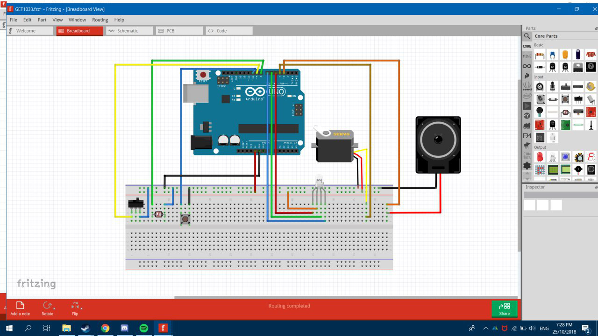
Image:
First iteration of Arduino-output connections
Components to be used
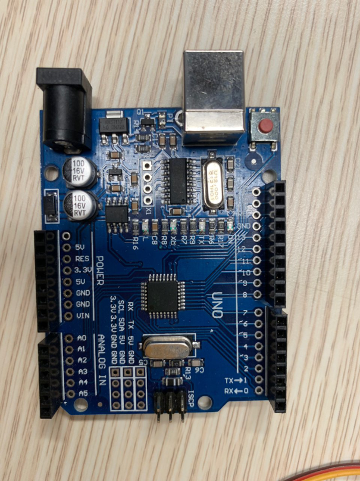
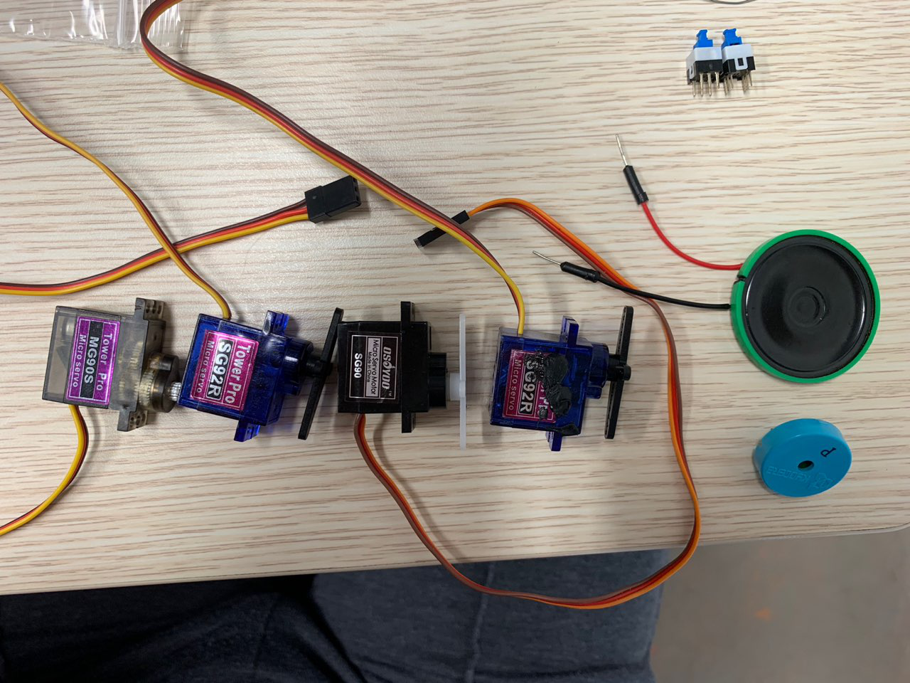
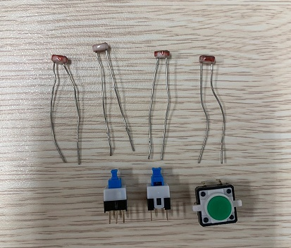
Switches/Buttons
Push Buttons
Photocell Sensor
4 Photocells
Arduino Programming Board
Arduino Programming Board
Buzzers
Buzzers
4 Micro-servos
4 Micro-servos
Jumper wires
Resistors
Breadboards
Project Phase One(Week 10)
To familiarise ourselves with programming on the Arduino IDE platform, we spent a week learning the code and obtain basic working input & outputs on the breadboard. It was also a good opportunity to test the components that we have obtained from the electronics lab and see if they were in good working conditions. In the following pictures, the layout of the connections took inspiration from the first model representation that was completed a week ago using the Fritzing software.
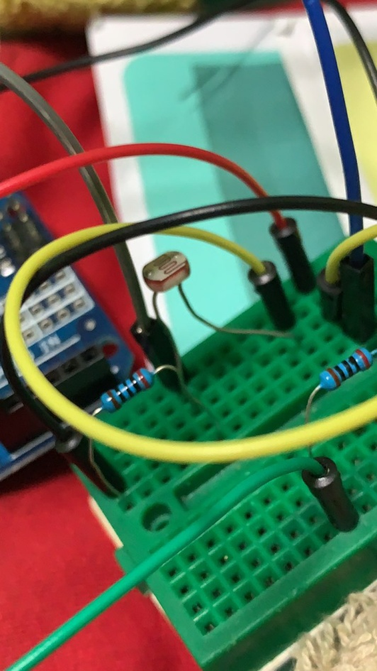
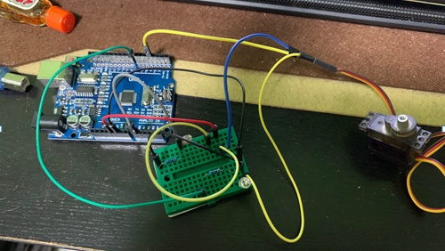
In this initial set-up, an LED is used to simulate a Buzzer as we did not manage to obtain a Buzzer during our first trip to the electronics lab. The following is a video file that demonstrates how the various outputs work. Upon contact with the photocell (detection of movement), the blinking LED simulates the ringing of the Buzzer and the moving servo indicates mechanical movement of doors.
Micro-servo
Micro-servo
Photocell
Photocell
LED
LED
Double click!
Double click!
Project Phase Two (Week 11)
Now that we have managed to get the rough outline of the coding process down, it is time to move towards something more complicated and representative of a real living space. The model used in the final phase will be one main living room and one bedroom. Each of these rooms will have a door and a window that have self-locking capabilities upon activation of the motion detection system.
Similar
to Phase One, the detection of motion is represented by the
activation of the photocells. In Phase Two, four servos are used to
individually represent the main living room, bedroom, and the two
respective windows. The following images depict the connections
between the various outputs on the Arduino-breadboard.
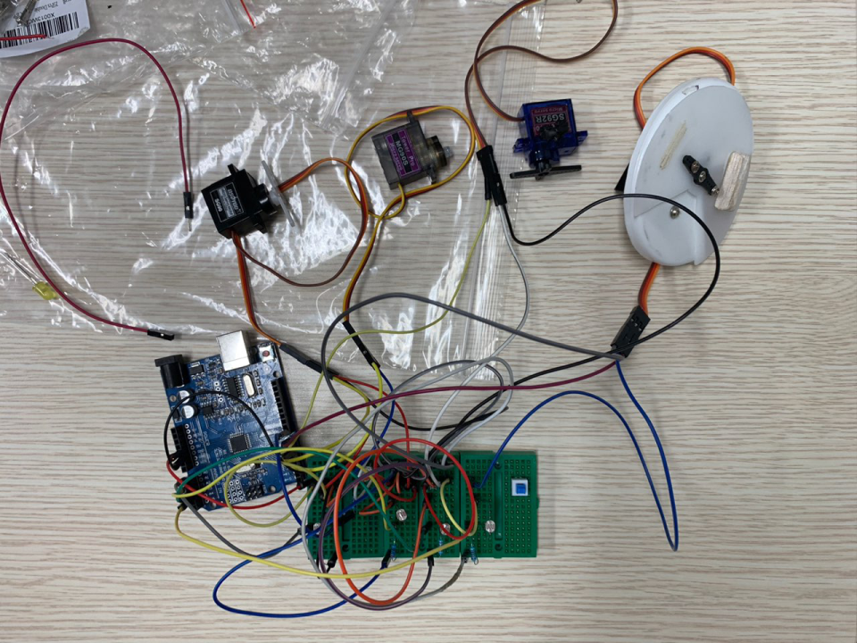
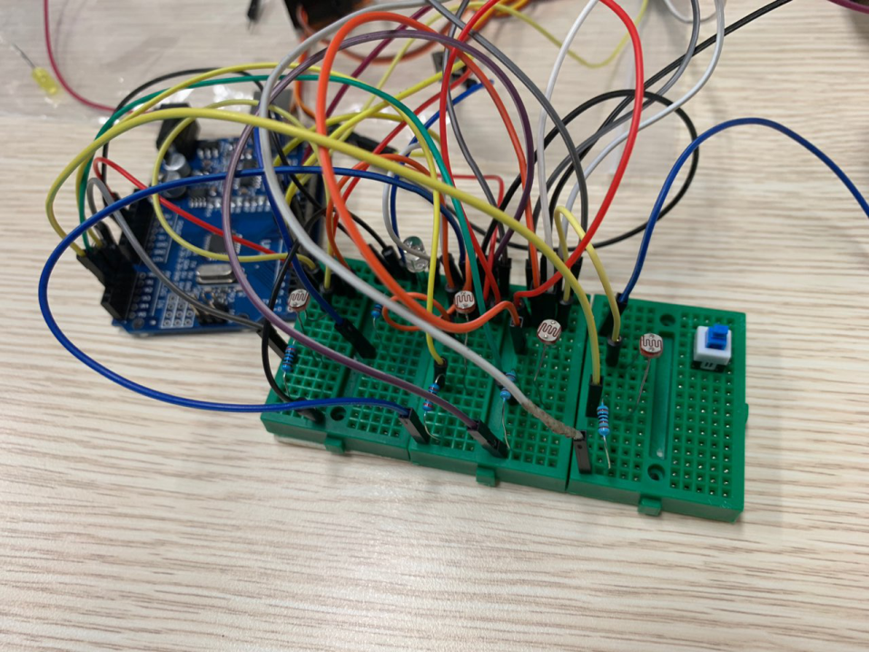
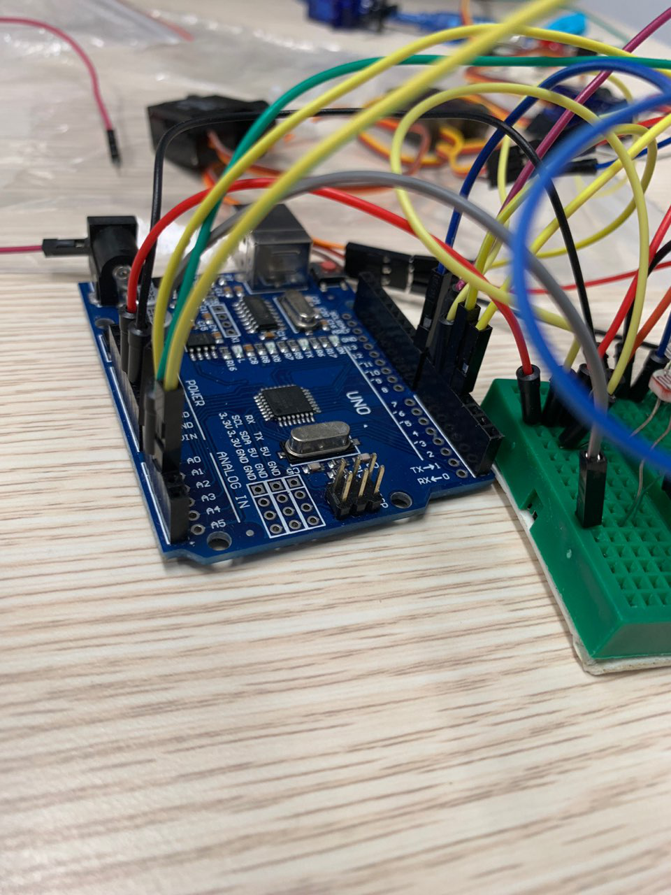
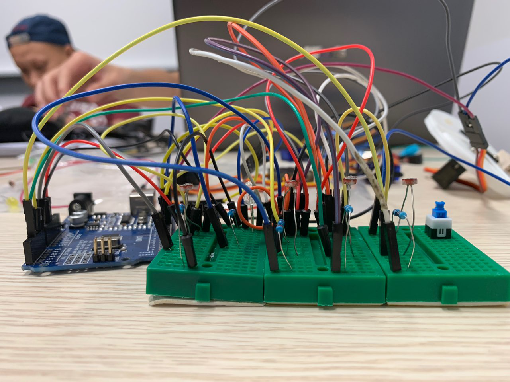
Double click!
Double click!
Continuation of the concept from Phase One, the photocells in Phase Two represents the motion detection sensors. When motion is detected, the corresponding servo that is programmed to the paired photocell will be activated and the entrance of the space will be locked. Similarly, when the photocells are deactivated, the corresponding entrances will be unlocked.
The following two videos demonstrate how the system works at the moment.
Continuation of the concept from Phase One, the photocells in Phase Two represents the motion detection sensors. When motion is detected, the corresponding servo that is programmed to the paired photocell will be activated and the entrance of the space will be locked. Similarly, when the photocells are deactivated, the corresponding entrances will be unlocked.
The following two videos demonstrate how the system works at the moment.
Project Phase Three (Weeks 11 and 12)
To add finishing touches to the project, a visual representation of the locking and unlocking feature of the micro-servos is fabricated as per the following images. This can be seen in the two videos of Phase Two.
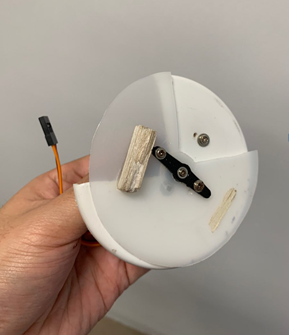
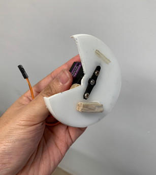
Fabricating such a design to simulate lock/unlock feature adds value to the project by allowing the audience to have a visual understanding of the movements of each micro-servo that represents different outputs of the project.
Unlocked position
Unlocked position
Locked position
Locked position
This corresponds to Janet Murray’s affordance of Interaction whereby,
Participatory – the users are able to visually and physically interact with the representation of the lock;
Procedural – the users will have a visual understanding of the security system and how the entries of each space of the project are secured properly.
The
circular cut-outs are prepared beforehand and mounted directly on top
of the micro-servos, using screws obtained from the electronics
lab.
Project
Phase Four (Weeks
12 and 13)
We finally managed to source the missing
components and add them into our circuitry. The project is finally
completed now that we have added an additional switch and a buzzer.
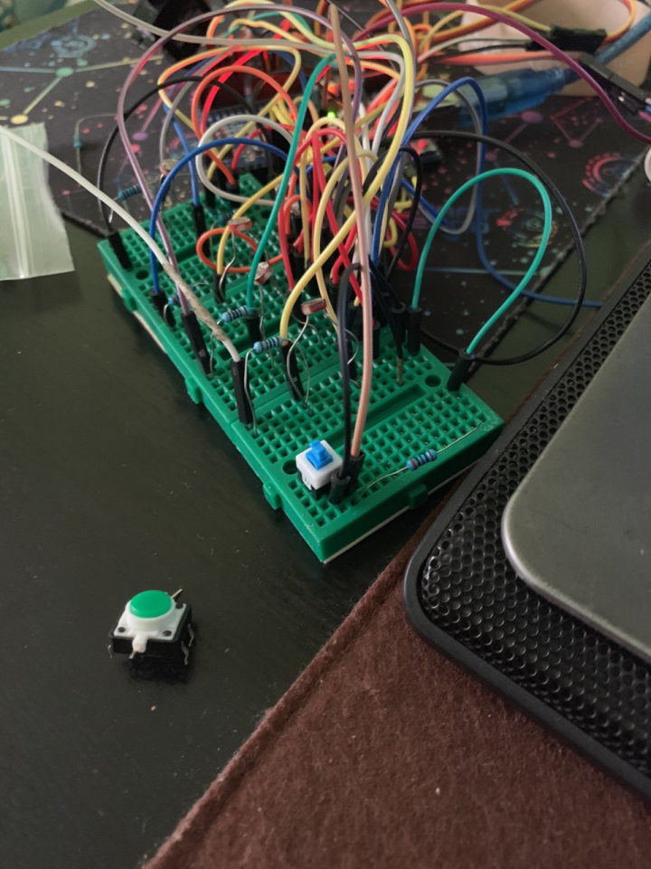
The first push-lock button is to activate/deactivate the security system.
The second push button is to reset the security system, whether or not the system is already activated using the first push-lock button.
The function of the buzzer is to emit a tone which simulates the alarm of the security system upon the first detection of any unauthorised movement (activation of the photocell).
The first push-lock button is to activate/deactivate the security system.
The second push button is to reset the security system, whether or not the system is already activated using the first push-lock button.
The function of the buzzer is to emit a tone which simulates the alarm of the security system upon the first detection of any unauthorised movement (activation of the photocell).
System On/Off button
System On/Off button
Reset Button
Reset Button
Similar to the 2 videos in Project Phase Two, in the above video, it demonstrates the entire process of locking/unlocking of each of the 4 locks which are paired with their individual photocells in the circuit.
Double click!
Double click!
As observed in the video, the blue toggle push button is used to activate the system. The buzzer started to ring upon detection of the first photocell, and it continued to ring until the green reset button was pressed towards the end of the video. The buzzer can also be deactivated by deactivating the entire system as shown at the very end of the video.
Starting from the 24 second mark, it was observed that the first servo seemed to be locking/ unlocking itself randomly. However, this was due to the change in light intensity acting upon the first photocell where the shadow of the hand caused the photocell to activate, thus showing the repeated locking/unlocking process.
Challenges (During and Post-Project)
Components
We underestimated the number of jumper wires we needed for project, which led to a halt during Project Phase Two.
We were also unable to find toggle switches and had to settle for push buttons, which led to changes within the initial code that we had done.
Coding
We initially thought that the two buzzers that we took from the electronics lab were faulty. Turns out that we had the wrong code for it, as we initially thought the buzzer would sound upon connection to the 5V and ground of the breadboard. This issue was solved upon adding an additional line of code, “tone(alarmRing, 1000, 500)”, where we are also able to adjust the pitch of the tone (high or low).
As the photocell sensors detect light intensity, we had to reprogram the values of the light intensities whenever we changed our area of testing. As observed in the Phase 4 Demo of Project Phase Four, the photocell was activated by the shadow of the hand starting from the 24 second mark of the video, which caused the micro-servo to initiate random locking/ unlocking motion.
Midway through Project Phase Two, we encountered sequencing issues with our photocells and micro-servos, where the wrong pairs were being activated during testing of the program. We also thought that some of the micro-servos were faulty, but it turns out that the issue was within our code which did not activate the micro-servo itself. Upon careful review of our entire program, we realised our mistake and managed to rectify and run the correct sequence successfully.
Conclusion
From the beginning, my partner and I have encountered multiple obstacles as we progressed towards the end. As individuals with little to no coding background, it was an especially daunting start as we did not expect to be able to satisfactorily complete this project. Now that we have gone through the entire process, it felt great whenever we were able to overcome obstacles be it physical connections of the Arduino – outputs or the coding of the program. It was quite challenging to apply topics from the earlier lectures to the final project, especially so when we had to find new ideas so as to expand on Janet Murray’s 4 affordances.
Overall, we feel that going through and completing this project has been a good experience that has taught us a lot, especially in topics that were not covered in class. We hope to be able to bring forward the ideas that we have learnt from this course to assignments in our subsequent semesters of study in NUS.
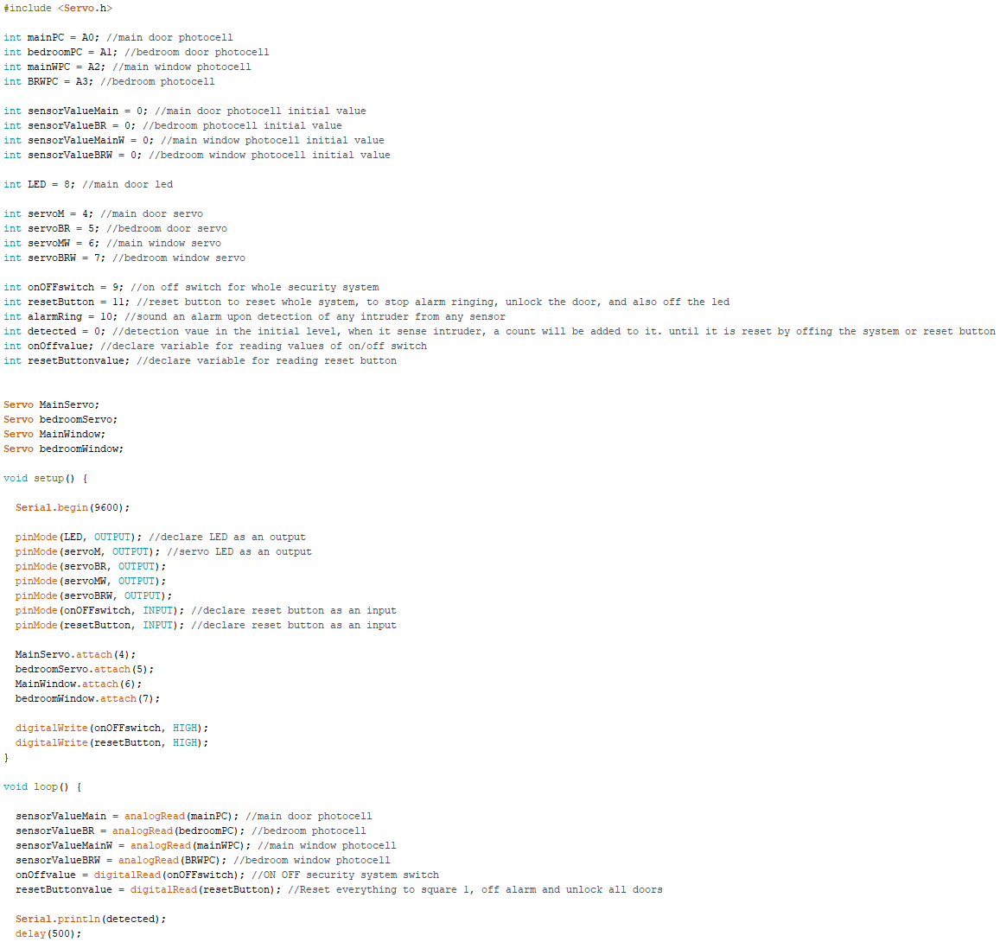
Sample
Code
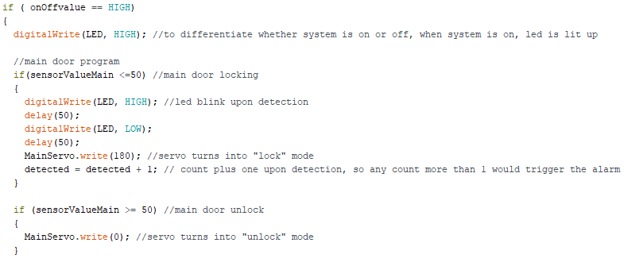
Rong Jun’s Reflection
I have built a mind
game home security system based project along with my teammate using
Arduino and several components such as photocell sensor, servo
motors, buzzer, and toggle switch along with a push button and LED.
The project works as such that once the owner leaves the home, they
will turn on the security system via the toggle switch. Once the
toggle switch is switched on, it’ll activate to all of the
following components to be at a high alert position. Together with
the components, our project is to play mind games together with the
trespasser. When he is near the door or window, the door or window
will be locked. Else, when he steps away, the door will be unlocked.
Firstly, photocell is placed at the 4 following area; the main door, bedroom door, main window, and also the bedroom window. The photocell is calibrated accordingly to the light intensity at the 4 following locations. Light intensity calibration must be done with care; any mis-calibration of the surrounding light intensity would trigger the program falsely. Therefore, it is very important to calibrate the photocell accurately. The main purpose of the photocell is to detect any movement. If there is a shadow or trespasser blocking the photocell, the light intensity would reduce, indicating that there is intruder inside the home. Else, when there is nobody or things blocking the photocell, the photocell intensity would be similar to the value of calibrated, and there will be no commands sent to the other components for activation.
Secondly, the servo motors are placed at doors and windows in the house. The servo motor will be connected to a locking mechanism. However, in our project, we are unable to attached the servo motor to a door for visualization, therefore, we will be attaching cardboards to the servo motor to mimic the process of locking and unlocking the doors and windows respectively. The servo motor will be taking in command from the photocell sensor; when the photocell sensed any motion, the light intensity is reduced, and we used an if condition in the programming of Arduino, if the light intensity falls below the range of calibration, it will sense a pulse to the servo motor, the servo motor will then be activated and lock the door. When the trespasser walks away from the door, the light intensity falls back to the calibrated range; the door will be unlocked. However, when the thief tries to escape through the door again, the door will be once again locked as the photocell again sense motion near the door.

Thirdly, the buzzer is used to sound off alarm if there is trespasser in the house. Once the first photocell is under the calibrated value, it will activate the alarm. The alarm worked differently from the servo motor. The servo motor unlocks when the trespasser steps away from the photocell, whereas the alarm will continue ringing all the way until the reset button is pressed or toggle switch is toggled. The main purpose of the alarm is to notify the surround neighbors and also caused panicked to the trespasser. Once the alarm ring, the trespasser will be panicking and trying to escape, that is where the mind games come along. When he tries to escape through the windows (if the house is located on the lower decks), the servo motor connected to the window will be activated and the windows will be locked to prevent him from escaping. Then when he realizes that the main door is unlocked, he will frantically try to run to the main door, however, the main door will be locked upon sensing the movement of the trespasser.
The LED is just to let the owner know whether the security system is on or off at the moment. When the system is on, the LED will light up, showing that the system will is on. The idea of LED is to ease the convenience of the home owner to double or triple check on the switch whether if the security system is on or off.
All in all, this
project is made to protect the home of the specific personnel while
they are out of the house. It eases their mind of worrying that
nobody will know whether their home is broken into or not. It will
give the home owner more confidence of knowing that their home is
safely protected by the home security system.
How does it connect to the ideas I have learnt ?
I have connected
this project to the idea of hacking. Most of the hacking is
un-noticed until someone realizes it and it becomes too late to
prevent hacking. Also, hacking can be done physically or through
online. Therefore, to catch the personnel responsible for hacking
would take some time to track down the hacker.
My idea of the home security system would prevent the “hacker” of the home from escaping from the house. This security system locks the hacker inside the house instead of allowing him to escape. Therefore, it greatly reduces the amount of time needed to track down and apprehend the suspects responsible for all the negative stuffs done to the surrounding. view video
Analyze the affordance of digital media it uses
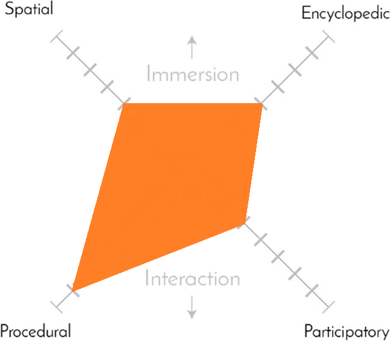
Spatial Affordance 4/8
Spatial affordance is the ability to navigate to places such as categorizing books in a library
My project does not have much navigation ability except for the LED to show where the trespasser is currently at
Encyclopedic Affordance 4/8
Encyclopedic affordance is the memory needed to store data
My project only has to store variables and values of the calibrated data from the photocell sensors, and also the memory for the angle the servo motor have to rotate to fully lock the door/window
Procedural Affordance 7/8
Procedural affordance is the ability of info processing, how does the info pass down from the input to output
My project plays a big part in procedural affordance. It makes use of input information from photocell sensor, toggle switch, and also reset button, and it all goes into the process of programming in bits form, and translate to the output in atoms form such as the servo motor, buzzer alarm and also LED(s).
Participatory Affordance 3/8
Participatory affordance is the ability of the system to be able to communicate with human
My project only consists of input controlled by the human. Therefore, the participation between human and the security system is at a low 3. If the project is able to inform the home owner of the location of the trespasser and also acts by itself to communicate with the police about the trespasser, the participatory affordance can be greatly increased.
How does it make use of the new abilities of computer?
My project generally makes use of the new computer abilities, such as programming, it allows the system to have the ability to sense, and act accordingly to the information stored inside the Arduino board. Without the evolution of computer and Arduino board, the system would have to be done mechanically such as the door locking when the trespasser steps on some traps laid near the door, and when the traps is activated, it locks the door with the locking mechanism.
Furthermore, the ability of computer allows us to program the system to suit our needs and wants without changing the design of the security system mechanically. It provides us with the flexibility and convenience of changing the abilities of the system. Therefore, making use of the new abilities of computer saves time and also money by not needing to change the design mechanically which could consume a lot of time and money.
How does it build off other project you have seen?
I have seen other home security system such as alarms notifying the surrounding personnel of the break-ins. But I have yet to see one that is able to trap the trespasser inside the respective area while help is on the way to deter the suspect. Therefore, I came to the idea of combining ideas together.
Firstly, part of my idea is built off the idea of the security system in a car. A car would sound off a loud alarm if there is any signs of break-ins, be it by forcing open the door, or breaking the windows of the car. This idea of alarm would notify the surrounding humans to take notice and rush to the location of the car. However, this idea would not be sufficient to deter and apprehend the suspect instantaneously, as the suspect would have already fled the scene before help has arrived.
Secondly, another
idea of locking the suspect in the house is based on the idea of
enclosing the whole area such the idea of enclosing the vicinity of
the prison if any inmates try to escape. All the doors will be locked
upon sounding of alarm, or activation via a switch. This will deter
any inmates from escaping the vicinity until help has arrived.
Therefore, the idea of locking the door to traps trespasser from
escaping the home allows me to implement my home security system
which allows the police to apprehend the suspect upon the arrival of
the home.
All in all, I built my project base on the idea of door locking in prison, and security system in a car. Combining both the idea together gives me the opportunity to built a home security system that is able to notify the surrounding personnel of the break ins and also allows us to traps the trespasser inside the house until help has arrive.
Hwee Kiat’s Reflection
How
does it connect to ideas you have learned?
From Bogost’s reading, Procedural Rhetoric, “…procedural expression must entail symbol manipulation, the construction and interpretation of a symbolic system that governs human thought or action” [1, pp. 5]. This gave rise to the idea in Project Phase Three, where we decided to give a symbolic representation of the locking/ unlocking procedure of the security system by attaching visual representations on top of the micro-servos.
The
initial idea of creating a home security system was made during the
Bits to Atoms tutorial session where we had to think of a way to
convert digital information into physical responses. Based on Hiroshi
Ishii’s reading, Radical Atoms [2], “Tangible design expands the
affordances of physical objects so they can support direct engagement
with the digital world”. We had this idea of tracking motion
within a physical space in order to trigger a digital response which
leads to different physical and digital outputs.
In our case, we made a pseudo Tangible User Interface (TUI) where we have both digital and physical outputs occurring simultaneously. Users are able to physically control the security system by activating/ deactivating the system as a whole. Digital input of the tracking of motion is simulated by the photocells connected in the system, which translates to both digital output (alarm, led on) and physical output (locking/ unlocking of entrances).
The various digital outputs of the security system includes the lighting of the LED when the security system is initially activated; the sounding of the buzzer when motion is first detected the motion detection system which is simulated by any of the four photocells, and the sending of digital signals to any of the four micro-servos upon changes in light intensity values as measured by the paired photocells.
As
for the physical outputs of the security system, the locking and
unlocking of the various doors and windows within each room are
actuated and simulated by the digital signals that are sent to the
micro-servos upon changes in light intensity values of the respective
paired photocells.
Therefore, the idea of Bits to Atoms can be roughly implemented and demonstrated within this project, whereby the “Bits” refer to the digitized detection of motion using sensors, simulated using light intensity measuring photocells, and the “Atoms” of the project refer to the physical actuation of locking and unlocking the various doors and windows in each room.
Within
our project, we have limited the number of rooms and the number of
entrances in each room to be 2 each (1 room = 1 door and 1 window).
Of course these values can be altered accordingly to the actual
layout of the houses that the user wish to implement this security
system in, whereby he/she only needs to change the number of
components used in the project as well as adding additional lines of
code, which is just a simple task of duplicating the same lines of
code while giving a different name to it.
Janet Murray’s Four Affordances
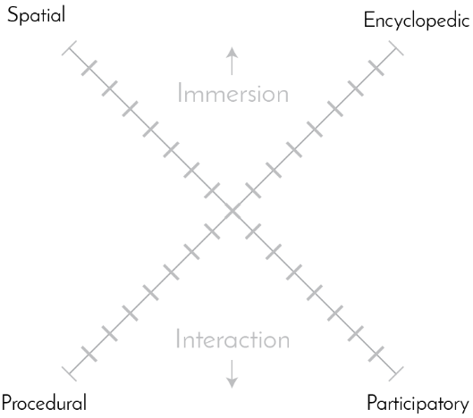
Immersion
Spatial
affordance 2/8 – Definition: navigation of massive information
by shrinkage of huge data files into a small interactive space.
In
this project, the security system does not store much information
other than data such as names of the various outputs and the Arduino
code that runs the system.
Encyclopedic
affordance 2/8 – Definition: containing very high capacity of
information in multiple media formats.
In this project, the
information stored does not take up much memory space. Formatting of
the program code was done using the Arduino IDE software.
Interaction
Procedural
affordance 6/8 – Definition: how does it take in information,
how does it process the taken information, how does it think through
a set of rules.
The security system operates using a fixed
step-by-step procedure as explained in the previous Project Phases.
If no motion is detected, the outputs will not be activated even if
the security system is turned on. Only when the user decides to
activate the security system will the outputs be part of the
scenario.
Participatory affordance 4/8 – Definition: ability to interact with the device in different ways, eg. typing with keyboard, waving gestures, different ways of interaction with a computer.
The only physical interaction the users can have with the security system is the activation/deactivation of the system by using the blue button in the pictures in Project Phase Four, and the green reset button in the same picture. Visually, the users can observe the locking/ unlocking procedure of the security system based on Project Phase Three where attachments are added onto the micro-servos.
How does the security system make use of the new abilities of computers?
In
the past when computational capabilities were insufficient, actual
security systems required the hiring of men and resources to upkeep
the security details. This was very inefficient as it would be very
difficult to ensure the security of every room within a household,
especially if the bottleneck was the number of guards that the
homeowners were financially capable of hiring.
With
the progression in technology, the use of software and sensors can be
implemented in security systems to cut down on manpower and replace
them with motion sensing systems, which are represented using light
intensity sensors (photocells) in this project. Changes in light
intensity detected by the individual photocells indicate the
detection of motion within a certain space, which simulates the
motion detection systems.
According to Janet Murray’s article, Inventing the Medium, a medium is “any combination of materials and cultural practices that is used to support intentional, meaningful communication by affording inscription, transmission, and representation” [3]. Through the implementation of software to replace physical manpower, a digital medium of a security system can be afforded by:
Inscription
– adding lines of code that forms the basic foundations of the
security system through the use of a computer and keyboard. This
relates to Murray’s Procedural affordance that was discussed in
the above section.
Transmission – the transferring of messages in this security system is represented by the lighting of the LED that indicates the activation of the system, as well as the sounding of the alarm when motion is detected.
Representation – the visual representation of the locking and unlocking actuations of the doors and windows are represented by the cut-outs that are mounted onto the micro-servos, as depicted in the various pictures and videos in Project Phases Two and Three.
Similarly,
basic robotics entails the sensing of the environment,
planning on how to react, followed by acting based on
the given inputs. In our project, they can be categorised as follows:
Sensing
of environment – the detection of motion in our project is
simulated by the measurement of light intensity values on each of
the four separate photocells. The activation of any photocell would
indicate that motion has been detected in that particular area where
the photocell (motion detector) is located.
Planning
how to react – in our project, the foundational program code
dictates the instructions that are to be followed when different
situations are encountered by the various inputs. For example, if
system is activated and if motion is detected; sound the alarm and
lock the nearest entrance/exit.
Do something, Act – in our project, the task to be performed can be altered based on the Arduino program code. As mentioned in the above example, the physical actuation of locking and unlocking the nearest entrance will only be done if unauthorised motion is detected when the security system is activated.
The
implementation of software will allow the users to save on
unnecessary expenses which can be used in other areas to further
improve their quality of life. It is also more convenient for
homeowners as they would not need to deal with trust issues of hiring
security guards within their own premises.
How does it build off other projects you have seen?
The
idea of allocating photocells to entrances of a real space (doors and
windows) came about during the Bits to Atoms tutorial session where
we were shown a video of moving water molecules on a surface, block
by block.
This led us to think of individual
compartmentalised spaces with varying number of entrances, and the
idea seemed suitably fit for use in everyday households with
different rooms in the premises. The project was then started with
the foundational idea of tracking motion room by room, which was then
further improved by increasing the number of tracking points, as
demonstrated within the project by the various entrances (doors and
windows).
Ideally, this project should have been implemented using proximity sensors instead of light intensity photocells. Due to the lack of resources, we were unable to obtain said proximity sensors during our multiple visits to the electronics lab. However, we feel that the use of light intensity photocells to simulate the detection of motion is sufficient to give a rough idea to our audience with regards to the concept of this project.
We have also chosen to limit the number of rooms and the number of entrances to be 2 each as it will be inefficient to demonstrate any number higher than that since the basic operational concept works in the same way, regardless of the number of rooms/entrances.
|
[1] |
I. Bogost, Persuasive Games: The Expressive Power of Videogames, The MIT Press, 2010 . |
|
[2] |
H. Ishii, D. Lakatos, L. Bonanni and J.-B. Labrune, "Radical Atoms: Beyond Tangible Bits, Toward Trasnformable Materials," pp. 38-41, 2012. |
|
[3] |
J. Murray, Inventing the Medium, Principles of Interaction Design as a Cultural Practice, The MIT Press, 2011. |